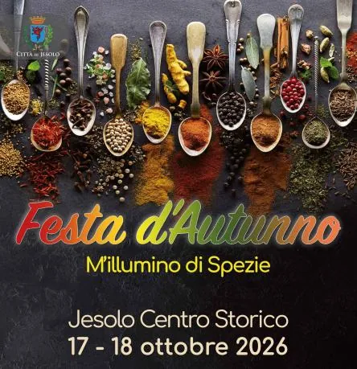

da sab 17 ott a dom 18 ott
M'illumino di Spezie
Sabato 17 e domenica 18 ottobre, in concomitanza con la grande Festa d’Autunno nel centro storico di Jesolo Paese, è in programma la quinta edizione dell’evento M’illumino di Spezie.
 Indicazioni
Indicazioni
- Costi e prenotazioni
- Costo non indicato · Prenotazione non indicata
- Programma
- Programma da verificare. Apri la fonte ufficiale per orari e possibili aggiornamenti.
- In caso di maltempo
- Nessuna indicazione specifica pubblicata.
- Note
- Acquisito automaticamente dalla fonte.
L’EVENTO
Descrizione completa
Sabato 17 e domenica 18 ottobre, in concomitanza con la grande Festa d’Autunno nel centro storico di Jesolo Paese, è in programma la quinta edizione dell’evento M’illumino di Spezie.
Spezie a tutto campo, un modo per amarle, apprezzarle ed imparare ad usarle. Due giorni di incontri, mostre, masterclass, e show cooking.
I sapori della Terra sono raccontati, annusati, provati attraverso la Mostra “Spezie dal Mondo”, una delle più grandi d’Italia con 250 tipi di aromi tra i più antichi e pregiati per vivere in prima persona l’esperienza di un percorso olfattivo a 360°: fragrante cannella, intensa noce moscata, intriganti miscele, rare varietà selvatiche di pepi africani o asiatici.
Esposizione “Spezie di Fuoco” con oltre 200 tipi di peperoncini dolci e piccanti dalle varietà più piccole a quelle più costose al mondo.
Provare la vertigine del piccante, superare il proprio limite nella “Gara di mangiatori di peperoncino”, aperta a chiunque voglia sfidare sé stesso per provare una esperienza irripetibile, ma confrontandosi con fuoriclasse di fama europea, nella finale nazionale del Campionato Italiano Mangiatori di Peperoncino.
Gli esercizi del food & beverage jesolano si mettono in gioco, ciascuno adottando una spezie e preparando ad hoc cocktail e squisitezze dolci e salate.
Le mostre sono aperte al pubblico durante tutto l’arco della manifestazione
ore 11:30 Mostra: Spezie dal Mondo
Visita guidata dai curatori con percorso olfattivo - Ingresso libero
(Hotel Udinese, via C. Battisti 25)
ore 12:00 Laboratorio: Il piccolo cartografo
Laboratorio per bambini e ragazzi curato da Natalia Gerasimova
ore 15:30 Incontro: Il viaggio nel mondo delle spezie di Antonio Pigafetta con Carla Coco
Degustazione di gelati speziati e di anice Varnelli
Ingresso libero con prenotazione al 335 6033639
(Biblioteca Civica di Jesolo, Piazzetta Jesolo 1)
ore 17:00 Masterclass: Habanero’s Farm presenta:
Il peperoncino tra storia, anima e passione
Introduce Daniele Berto. Partecipano Francesco Ippolito, Giancarlo Gasparotto,
Adriano ‘Pepper’ De Luca. Con degustazione finale
A seguire visita guidata alla Mostra Spezie di Fuoco
ore 17:30 Inaugurazione con le Autorità
ore 18:30 Gara Mangiatori di Peperoncino: Finale Nazionale del Campionato Italiano Super Hot Jack Pepper
Ingresso libero (Piazza 1° Maggio)
ore 11:00 Mostra: Spezie dal Mondo
ore 11:30 Masterclass: Distilleria Bonaventura Maschio presenta:
Prati, Agricoltura, Amari
Degustazione dell’amaro Pratum biologico guidata da Francesco Zara
Introducono Flavio Birri e Leopoldo Simonato.
ore 15:00 Masterclass: Sidea Spezie -L’impero del Sole presenta:
Giampaolo e Gianmarco Castellan. Introduce Alessandro Ragazzo
Degustazione guidata - Ingresso libero con prenotazione al 3356033639
ore 15:30 Mostra: Spezie dal Mondo
ore 15:45 Show Cooking: Lo chef Alessandro Menditto, del ristorante Il Fuoco Sacro, 1 stella Michelin – Relais & Chateaux Petra Segreta preparerà un piatto speziato a base di zucca, a seguire Elisa Carraro della pasticceria Zamatteo di Jesolo presenterà il suo Patè de fruits alla mela e vaniglia, con piccola degustazione finale gratuita.
ore 16:45 Show Cooking: Riso, zucca e spezie, un racconto che arriva da lontano. Con preparazione in diretta di un risotto e successiva degustazione gratuita
Tutte le prenotazioni al numero 335-6033639 Whatsapp
Veneto a Tavola sas: Organizzazione Eventi
Leopoldo Simonato, cell. 335-6033639, info@venetoatavola.it
Carla Coco, Art Director della manifestazione, carlacorsara@gmail.com, cell. 328-3376642
Flavio Birri cell. 328-3376641 flaviobirri@gmail.com
Alessandro Ragazzo cell. 339-4771262 alessandroragazzo@hotmail.com
IL PROGRAMMA
Programma e orari
Appuntamenti raccolti dalle fonti elencate. Dove manca un orario, non è ancora disponibile in questa scheda.
Programma pubblicato
- Dal 2026-10-17 al 2026-10-18
INFORMAZIONI UTILI
Prima di partire
- Controllare la fonte prima di partire.
ORGANIZZAZIONE